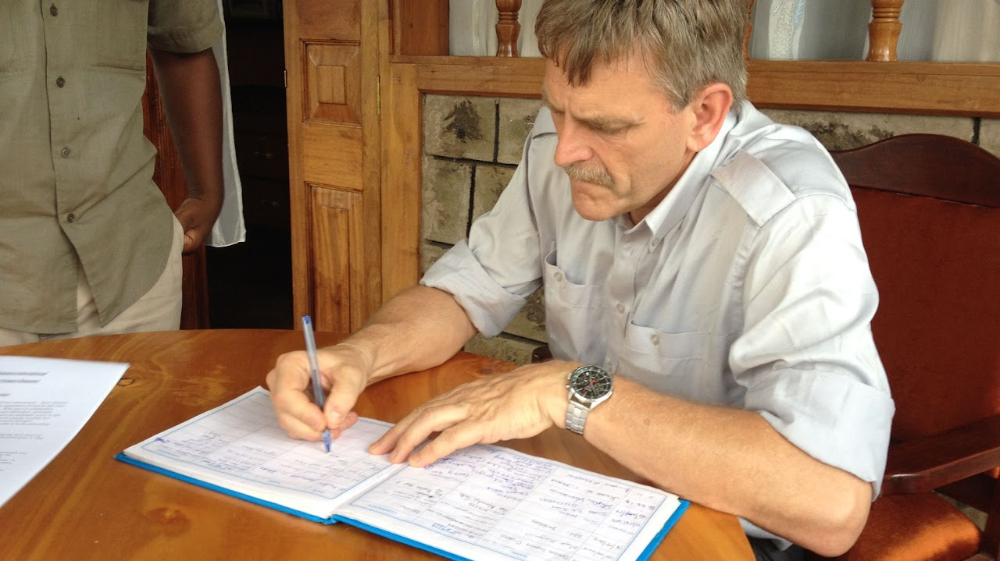

Over ons
Als stichting willen we ons inzetten om onder zeer arme bevolkingsgroepen hoop te bieden. Zowel geestelijk, door evangelisatie, als materieel doen we dit door in samenwerking met lokale kerken en leiders kleinschalige hulpprojecten op te zetten.
De hulp die wij bieden komt rechtstreeks terecht bij mensen die leven in uitzichtloze situaties. Er is bijvoorbeeld nauwelijks gezond drinkwater, er zijn geen medische voorzieningen, geen sanitaire voorzieningen en geen of zeer gebrekkige woonvoorzieningen. Op geestelijk vlak is er nauwelijks pastorale hulp en zijn er geen voorzieningen om samen kerk te zijn.
„Ja, Hij geeft zo veel dat u altijd veel kunt weggeven. En wanneer wij uw gift brengen aan hen die te kort hebben, zullen zij God danken en prijzen voor uw hulp.”
Onze passie vindt zijn oorsprong in de Bijbel. Wij vinden het geweldig om op deze wijze mee te kunnen bouwen aan Gods Koninkrijk. Het is een voorrecht om vanuit onze overvloed te mogen delen.

Hoe het begon
Voorafgaand aan de oprichting van Stichting Matumaini is een bezoek gebracht aan de lokale bevolking van Turkana, rondom de plaats Lokichar. Dit bezoek kwam voort uit een „Global Alpha Trainingsmission” in deze regio in Noordwest-Kenia. Naast het trainen van kerkleiders is onder meer een bezoek gebracht aan een klein vluchtelingenkamp.
Hier ontstond een innig en openhartig gesprek met de lokale bevolking. Je realiseert je dan pas wat het voor mensen betekent om in deze erbarmelijke omstandigheden te leven en hoe uitzichtloos de situatie is. Met de praktische hulp die we direct konden bieden (water, voedsel en bemoedigende woorden) was men zeer blij. Op de vervolgvraag „hoe kunnen we jullie het beste praktisch en structureel helpen?” kwam het antwoord: „het beschikken over geiten”.
Bewogen met de leefsituatie van deze mensen, in combinatie met een antwoord op gebed, heeft dit geleid tot de oprichting van onze stichting Matumaini kwa Turkana. Uit het gesprek met de mensen uit het vluchtelingenkamp is ons eerste project voortgekomen: het geitenproject. Met de uitvoering van dit project maakten we een begin om iets aan de uitzichtloze situatie van deze gezinnen te doen. Later verschoof het zwaartepunt van ons werk naar Kiminini, waar we tot op de dag van vandaag samenwerken met de lokale kerkgemeenschap.
Bestuur
| Voorzitter | Tom Joosse |
|---|---|
| Secretaris | Paulien Joosse-Naaktgeboren (sinds 1 januari 2021) |
| Penningmeester | Jan Anninga |
Bestuursleden en vrijwilligers ontvangen geen vergoeding voor hun werk. Meer over onze doelstelling, ons beleid en onze financiën leest u op de pagina ANBI.